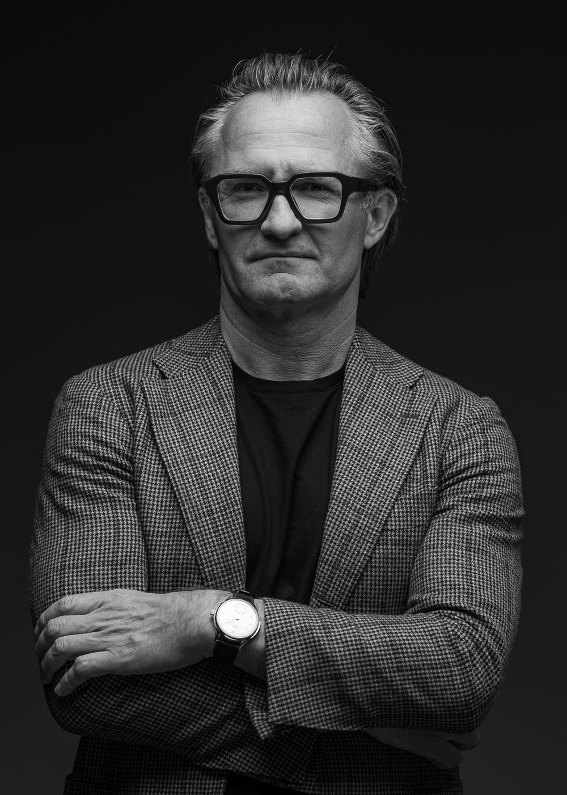
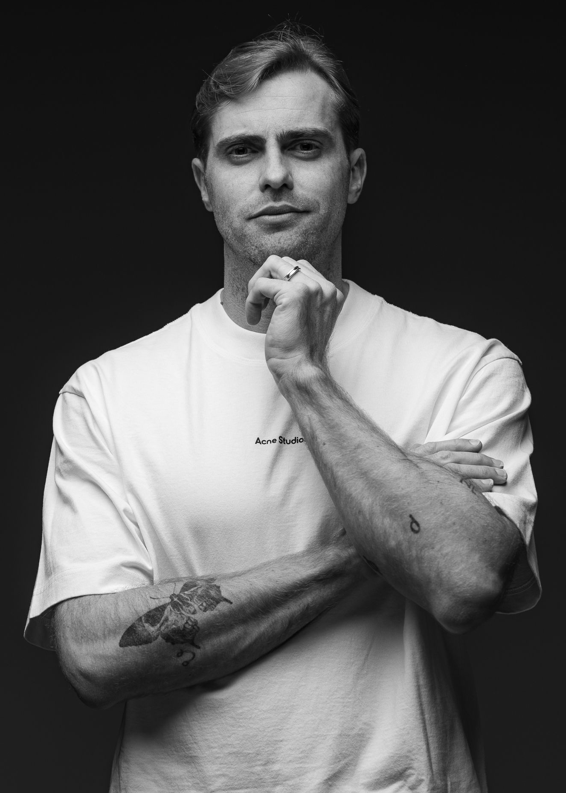
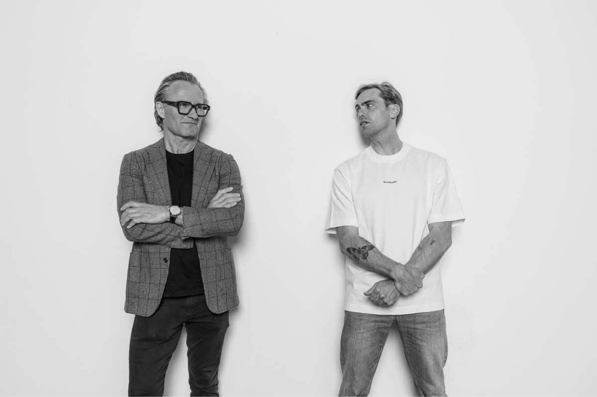

Globally informed
better networked
more collaborative venture capital.
LUXEM Ventures exists to support innovation and challenge industry norms, empowering Founders to enter, swim, and thrive in uncharted waters. We invest and re-invest time and capital in people, product, and company to effect positive and wide-reaching change.
LUXEM Ventures is an Australian Family Office and investor in early stage technology companies.
We are a Family Office with a strictly venture investment mandate; a Venture Fund with a single Limited Partner.
We are built, think, and behave like a start-up; we too walk a path less travelled.
We are invested in and actively co-invest alongside the best emerging venture fund managers in Australia; we are also invested in select international emerging fund managers with which we share information and valuable cross-market insights.
We are sector agnostic and invest directly and readily within Australia at the pre-Seed and Seed stages.
Our networked approach, expertise, and capital complements that of the Founders we serve, and the emerging venture fund managers with which we partner.
Derived from Luxembourg; a proud country original in its endeavours, small in size but not in spirit. Steadfast and stubbornly true to its roots and values. Fiercely independent and therefore free of boundaries and restrictions.
Luxembourg is a country that is famously non-conformist, but universally respected by its peers; courageous, ambitious and motivated. A small fish in a big pond of land that is Europe, but never swallowed.
Luxembourg's rich history bears a lesson of patience, where collective and sustained grit paired with cleverness, will in time deliver perpetual prosperity and above all else — a widely respected legacy; a legacy worth building and protecting.
Coincidentally, Luxembourg built its empire via the banking and finance sector and boasts the largest GDP per capita of any nation; Luxembourg punches above its weight. It provides a spirited reference for our name, which has been adapted in a progressive manner to accurately reflect who we are and our core values; resulting in the name of LUXEM Ventures.
Agri & Food tech
Sports Media tech
Future of Work
Fintech
Construction tech
B2B Marketplace
Clean Tech
Mobility
Last mile logistics
Martech
Cyber Security
Death tech
An accomplished operator and tenured investor spanning several market cycles and including significant alternative investment experience. An avid believer in and supporter of innovation as an operator and professional investor, Josh Co-Founded and heads one of Australia's most forward-thinking and outwardly venture focussed Family Offices in LUXEM Ventures.
LinkedIn
An experienced corporate advisor, fund manager, and multi-sector operator with significant early stage venture investment experience, unmatched local and global venture market knowledge, and deep networks within Australia's pre-seed and seed venture ecosystem. Proactive and hands on across the portfolio, Dean also serves as a Venture Partner at the PLG-focussed Tidal Ventures.
LinkedIn

Josh and Dean co-Founded LUXEM Ventures to invest heavily, flexibly, and purely in venture, bringing a different perspective to the Australian venture ecosystem, and with a view to export great Australian early stage companies and innovation to international markets.
Co-Founder and Managing Partner of Tidal Ventures. Grant boasts 20+ years investing in the Seed stage across Australia, Asia, and the US, and significant operating experience care of his stint at Yahoo during its most transformative years. LUXEM Ventures is invested in Tidal Seed Funds and has through a uniquely strong relationship with Grant and Team learned the Tidal way, organically adopting and enacting this with regards to its focus on and preference for a product-led growth approach.
A mutual appreciation at both firm and human levels has led to Tidal and LUXEM Ventures extending their relationship further with Dean joining the Tidal Team as a Venture Partner. Grant and the Tidal Team are building some of the Australian venture industry of the future's core infrastructure.
LinkedInCo-Founder and co-CEO of Tractor Ventures. Matt and wife Aprill Allen, and Tractor Ventures Co-Founder and COO, have been stalwarts of the Australian start-up ecosystem since 2013, and are now widely regarded as some of the best angel investors in Australia and New Zealand.
LUXEM Ventures is invested in Tractor Ventures with which it has built a strong relationship through their mutual interest in investing the venture asset class in such a way that Founders and Founding Teams' interests are well represented and protected in good times and bad.
LinkedInFounder and Managing Partner of Focal, mentor at NYU's Endless Frontier Labs, and Stanford, Harvard, and Berkeley business school alum. Daniel is a pioneering Australian venture investor being one that started his journey in Silicon Valley and firmly in the North American market's pre-Seed stage.
Post his 5 years working in senior operating roles within the Californian tech industry, Daniel founded the San Francisco-based Focal to provide international investors with access to the first financing round of North American start-ups.
LUXEM Ventures is invested in Focal and enjoys the luxury of having Daniel and Focal usher it into the North American market and the significant cross-market insights and opportunities the Focal-LUXEM Ventures dynamic provides.
LinkedIn